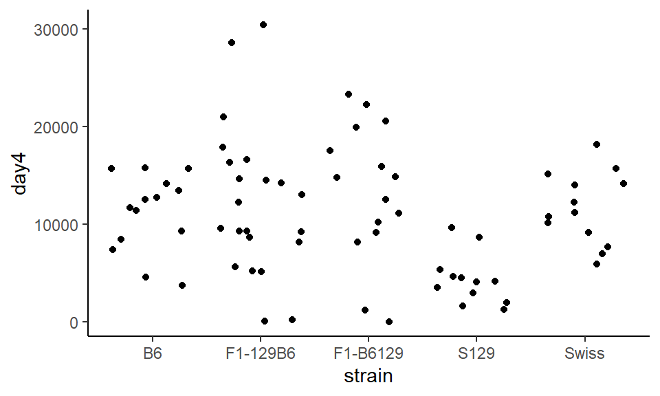
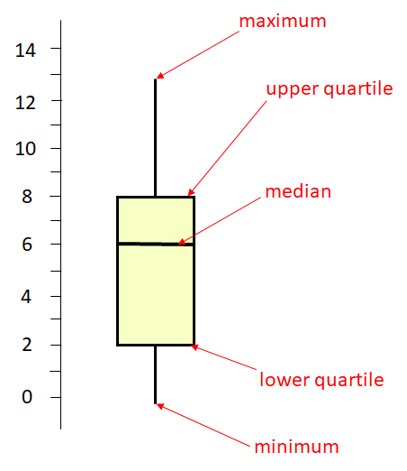
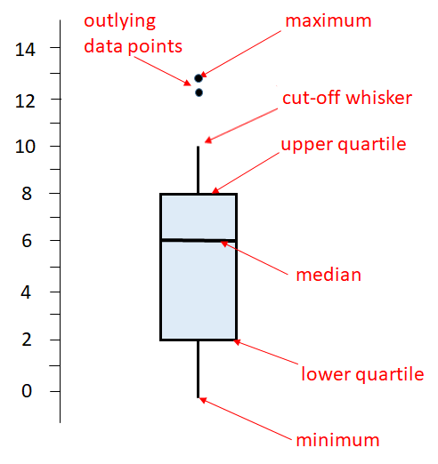

One of the most important data visualizations that we make is to compare the distribution of data across groups. Here we have a categorical variable on the x-axis, and a continuous variable on the y-axis. For some reason, the most common way to represent these data in most of the scientific literature is to plot bar graphs with error bars - so-called dynamite plots. However, in our very strong opinion these plots are dreadful and you should never use them. Fortunately others agree. Instead, please choose from strip plots, boxplots or violin plots, or a combination, depending upon your data.
In this section we’ll use the wheels1.csv dataset. These data show the number of revolutions of a running wheel made by mice over a four day period. The mice vary by their strain (type). Here we just select the id, strain and day4 columns for this example:
The day4 column represents how many wheel revolutions the mice made on their fourth day running in the wheel. Some mice really like running in the wheel, others aren’t as bothered!
Let’s have a look at how many datapoints we have in each strain:
table(wheels$strain)
B6 F1-129B6 F1-B6129 S129 Swiss
14 22 15 16 13
We have 80 mice in five different strains.
5.1 Strip Plots
Strip plots essentially just plot the raw data. It’s like plotting a scatterplot, except we plot a categorical variable on the x-axis.
So in our example, inside aes() we’ll put strain on the x-axis with x=strain, and on the y-axis we put our outcome variable with y=day4. We’ll add datapoints with + geom_point():
ggplot(wheels1, aes(x = strain, y = day4)) +geom_point() +theme_classic()
The major issue with this plot is that all the points are in a very straight line, and it can be difficult to distinguish between different points. To change this, instead of using geom_point() we use geom_jitter() which bounces the points around a bit:
ggplot(wheels1, aes(x = strain, y = day4)) +geom_jitter() +theme_classic()

Whoops! The points exploded. Now it’s not possible to know which points belong to which group. To constrain this, we can set width= inside of geom_jitter() which tells the points how far they are allowed to bounce around:
Boxplots are a very useful way of summarizing the distribution of data. The image below summarizes what each line in the boxplot represents.

The middle horizontal line is at 6. This represents the median of the distribution which is the middle value. 50% of the distribution lies above this value and 50% below it. The higher horizontal line at the top of the box represents the upper quartile. This is approximately the median of the upper 50% of the data, so is approximately the 75% percentile. The lower horizontal line at the bottom of the box represents the lower quartile. This is approximately the median of the lower 50% of the data, so is approximately the 25% percentile of the data. Therefore, the middle 50% of the data (from the 25% percentile to the 75% percentile) lies inside the box. The long vertical lines represent the range of the data. The top of that line is the maximum value in the data, and the bottom of that line is the minimum value in the distribution.
The above is a basic boxplot. However, ggplot2 does things a little bit differently. It turns out there is more than one way to calculate the lower and upper quartiles (see section @ref(interquartile-range)). Also, R doesn’t necessarily extend the vertical lines (whiskers) all the way to the minimum and maximum values. If there are datapoints that are too far away from the upper or lower quartile, then it truncates the whisker and shows datapoints outside of this range as dots. Here is an illustration of a ggplot boxplot:

OK, let’s have a look at some boxplots using ggplot(). We provide the same x=strain and y=day4 values as we do with strip plots. Instead of geom_jitter() we use geom_boxplot():
ggplot(wheels1, aes(x = strain, y = day4)) +geom_boxplot() +theme_classic()
You can see in this example, that the strain “F1-129B6” and the strain “S129” both have two datapoints that are shown as outliers beyond the whiskers.
To change the colors of the boxplots, you can change color= and fill= inside geom_boxplot(). Remember that color refers to the color of the lines, and fill refers to the filled in color of the shape:
ggplot(wheels1, aes(x = strain, y = day4)) +geom_boxplot(color="navy", fill="lightsteelblue1") +theme_classic()
You can change the size, color and shape of the outliers. For instance, to remove them completely, we do outlier.shape=NA inside geom_boxplot()
It can often be helpful to overlay your raw datapoints over the top of boxplots, providing that you don’t have too much data. To do this, just add your points with either geom_point() or preferably geom_jitter(). But one warning - make sure you remove any outliers with outlier.shape=NA otherwise those datapoints will show up twice:
Sometimes this can look a bit too busy. One way to contrast things is to set either the points or the boxplots themselves to have some transparency with alpha=.
The boxplot that we made looks ok, but one thing is visually annoying. The boxes are plotted in alphabetical order on the x-axis (B6, F1-129B6….. Swiss). There is no reason why they should be in this order. A more visually appealing way would be to order the boxplots from the group with the highest median to the lowest median.
To do this, instead of putting x=strain inside of aes() we put x = reorder(strain, -day4, median) inside instead. This is a bit of a mouthful. To break it down, it’s saying plot strain on the x-axis, but reorder the groups based on the median of the strain column (that’s the ‘-day4’ in the code).
The output looks pretty good - it is now really easy to notice that one of the groups has a much lower distribution than the others. The major issue is that the label of the x-axis is terrible. So let’s fix that:
Often boxplots look perfectly fine with the categorical grouping variable on the x-axis and the continuous variable on the y-axis. If you start to have many groups, then sometimes the boxplots looks too cluttered when placed on the x-axis. In this situation, it might look better to flip the axes, and have the boxplots stacked vertically. To do this, you write your plot code exactly as you would normally, but you just add + coord_flip() to the end of the code.
Let’s add this to the reordered boxplots we just made in the previous section:
This is OK, but it would be nicer if the highest values were at the top. There may well be a more straightforward way of doing this, but a quick solution is to wrap reorder(strain, strain, median) with fct_rev, so you now have x = fct_rev(reorder(strain, strain, median)). It’s a whole lot of code, but it does make the graph really pretty, so it’s worth it:
A disadvantage of boxplots, especially when you have large distributions, is that the box does not tell you much about the overall shape of the distribution. An alternative are violin plots, where the width of the shape reflects the shape of the distribution. To make these plots, instead of using geom_boxplot() we use geom_violin().
ggplot(wheels1, aes(x = strain, y = day4)) +geom_violin() +theme_classic()
You can do all the customizing, reordering, coloring, transparency-ing, etc that you do with boxplots:
Sometimes, we want to compare distributions for the same group side by side. For instance, we may not just want to plot the day4 wheel running data, but also plot the day1 data.
Below, we have data in wide format. We have ids, strain, day1 running and day4 running.
# A tibble: 160 x 4
id strain day value
<chr> <chr> <chr> <dbl>
1 692ao B6 day1 12853
2 692ao B6 day4 12516.
3 656aa B6 day1 2644
4 656aa B6 day4 7404.
5 675ag B6 day1 4004.
6 675ag B6 day4 3761
7 675ai B6 day1 11754.
8 675ai B6 day4 11684
9 656af B6 day1 6906.
10 656af B6 day4 8468.
# ... with 150 more rows
Now the wheel running data is in its own column - value. So we use y=value. The grouping variable is in the day column, so we use fill=day to make separate boxplots based on the day. This will also make them different fill colors:
ggplot(wheels2.long, aes(x = strain, y = value, fill=day)) +geom_boxplot() +theme_classic()
This looks ok, but the colors are yucky. Lets add custom titles, labels, and we’ll customize the fill colors using scale_fill_manual. We have two groups (day1 and day4) so we need to provide two colors:
It turns out all the strains increase their overall running in wheels from day 1 to day 4, except the S129 strain who get bored with wheel running - probably similar to how you’re bored of seeing graphs about wheel running.
5.5 Ridgeline Plots
Another useful way of displaying distributions of data across groups is using ridgeline plots. These are essentially density histogram plots for each categorical group plotted side by side. To do this we need to use a package called ggridges. This can be installed by going to the Packages tab, selecting Install and typing in ggridges in the box.
Let’s go back to the olives data. Say we are interested in displaying the distribution of oleic acid content by macro.area. We plot the categorical group of interest (here macro.area) on the y-axis, and the continuous variable whose distribution we are interested in (oleic) on the x-axis. We then use stat_density_ridges() to plot the ridgeline plots.
library(ggridges)olives <-read_csv("data_raw/olives.csv")ggplot(olives, aes(x = oleic, y = macro.area)) +stat_density_ridges() +theme_classic()
You can add color by adding in a fill= to the aes().
ggplot(olives, aes(x = oleic, y = macro.area, fill = macro.area)) +stat_density_ridges() +theme_classic()
… and perhaps we can manually override the default color scheme - here I’m using hex codes to pick a very purply color scheme:
ggplot(olives, aes(x = oleic, y = macro.area, fill = macro.area)) +stat_density_ridges() +theme_classic() +scale_fill_manual(values=c("#D1B8D0", "#F78EF2", "#AC33FF"))
A nice thing about these ridgeline plots is that we can easily add on lines that represent the lower quartile, median and upper quartile by adding in the argument quantile_lines = TRUE like this:
ggplot(olives, aes(x = oleic, y = macro.area, fill = macro.area)) +stat_density_ridges(quantile_lines =TRUE) +theme_classic() +scale_fill_manual(values=c("#D1B8D0", "#F78EF2", "#AC33FF"))
The final ridgeline plot below plots the distributions of oleic acid by region. There are 9 regions. It’s best in these plots to try and plot the categories from highest to lowest median, as it looks nicer. The following code is a bit tricky, and if you’re not interested - then you can safely ignore. However, just in case it is of interest to anyone: to do that you need to make sure ggplot recognizes the categorical variable region in this case to be a factor (a grouped variable) and that they are in the right order. It can be done using using this line: fct_reorder(region, -oleic, .fun = median). Essentially this says, make the region variable a factor, and reorder it to be from highest median of oleic acid to lowest. One final thing - you have to do this for both the y axis category, and the fill - otherwise your colors won’t match your y-axis categories.
In the below code, I also added quantiles, x-axis and y-axis titles, a title and I removed the legend as it didn’t add any extra information that isn’t already on the plot.
ggplot(olives, aes(x = oleic, y =fct_reorder(region, -oleic, .fun = median), fill =fct_reorder(region, -oleic, .fun = median) )) +stat_density_ridges(quantile_lines =TRUE) +theme_classic() +scale_fill_manual(values=c("#0000FF", "#2000DF", "#4000BF", "#60009F", "#800080", "#9F0060", "#BF0040", "#DF0020", "#FF0000")) +theme(legend.position ="none") +ylab("Region") +xlab("Oleic Acid Content") +ggtitle("Oleic Acid Content of Italian Olives by Region")
For more information about these plots, you can look up the help documentation for this package here.